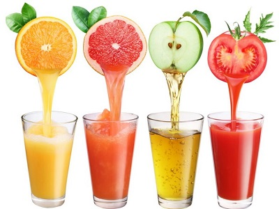

Наряду с овощами и ягодами фрукты занимают особое место в питании, являясь источником витаминов, микроэлементов, минеральных солей, углеводов, органических кислот и т. д. В процессе созревания в плодах накапливается мощный заряд защитных веществ. И поэтому сочные фрукты содержат в себе наибольшую концентрацию полезных и целебных веществ. По силе воздействия многие соединения в составе растений превосходят синтетические препараты. Фрукты и овощи намного превосходят мясо по содержанию белка. Например, половинка авокадо дает организму вчетверо больше биологически ценного белка, чем свиной шницель такой же величины.
Все мы пьем очень мало жидкости, и прежде всего это касается пожилых людей. Врачи и биологи рекомендуют выпивать ежедневно по меньшей мере два с половиной литра жидкости. Те же, кто ест достаточно овощей и фруктов, обеспечивают себе большую часть этой нормы.
По данным Института питания Академии наук РФ, рекомендуемые нормы употребления плодов на человека в год составляют арбузы и дыни – 28 кг, плоды и орехи – 106 кг, в том числе яблоки – 40 кг, вишня, слива, смородина – по 6 кг, виноград, дикорастущие ягоды – по 8 кг. Подобная информация станет для вас убедительным доказательством того, что потребление фруктов должно стать неотъемлемой частью любой диеты, независимо от ее целей (уменьшение или увеличение массы тела, восстановление физических сил после болезни и т. д.).
Начнем с фруктовых диет для детей. Надо приучать детей уже с раннего детства утолять голод не мороженым или гамбургером, а яблоком или бананом. Ведь фрукты намного полезней, чем сладости или уличные пончики; они повышают тонус организма, оптимизируют обмен веществ и служат первоклассными поставщиками энергии. Кроме того, никакая другая природная пища не обладает таким обширным набором жизненно важных витаминов. Ценные компоненты, содержащиеся в свежих фруктах, естественным образом поддерживают в хорошей форме нашу иммунную систему. А еще во фруктах содержится много клетчатки, которая мягко регулирует не только функцию желудочно-кишечного тракта, но и вес нашего тела.
Фруктовые диеты для детей Первая диетаПервый завтрак: любое горячее блюдо (желательно молочное или крупяное), гренки или пирог, стакан свежего апельсинового сока.
Второй завтрак: сладкая каша с добавлением кусочков фруктов, стакан молока.
Обед: первое и второе блюда, стакан свежего яблочного сока. Ужин: запеканка, творожное или овощное блюдо. Чай или любой сок на выбор.
Перед сном стакан молока или кефира.
Вторая диетаПервый завтрак: омлет, яичница с ветчиной либо молочная каша или хлопья в молоке; 2 бутерброда с зеленью и овощами: стакан яблочного или грушевого сока. Йогурт. Второй завтрак: запеканка, булочки ли пирожное, стакан молока ли кефира, яблоко.
Обед: первое и второе мясные или рыбные блюда, чай, фрукты.
Ужин: мясное блюдо с гарниром, сок.
Фруктовая диета для пожилых людейВ пожилом возрасте следует уделять большое внимание диетам. Особенно это относится к тем людям, кто привык предпочитать жирную и мясную тяжелую пищу кашам с добавлением овощей и фруктов. Известно, что у пожилых людей в большей или меньшей степени снижаются интеллектуальные способности, работоспособность, появляется забывчивость. А что является лучшим стимулятором для работы головного мозга? Конечно, глюкоза, которая в большом количестве содержится в натуральных фруктовых соках, особенно в апельсиновом, яблочном и гранатовом.
Первый завтрак: жидкая молочная каша с добавлением сиропа, гренки, фруктовый сок (кисель, компот). Второй завтрак: творог (обезжиренный), чай. Обед: первое и второе блюда (рыбные и мясные бульоны следует употреблять 2–3 раза в неделю), овощной салат. Стакан свежего сока.
Ужин: запеканка либо пудинг из различных круп в сочетании с молоком, творогом, сухофруктами, морковью. Кисель. А эта диета для людей, страдающих избыточным весом. Завтрак: отварная рыба и салат из свежей капусты, чай с добавлением фруктового сиропа (например, шиповника). Второй завтрак: яблоко, обезжиренный творог, стакан апельсинового или яблочного сока.
Обед: щи на мясном бульоне и мясо отварное с зеленым горошком.
Полдник: стакан молока с булочкой и фруктовое пюре (салат из фруктов).
Ужин: рыба заливная, фасоль стручковая, жаренная на растительном масле, яблочно-рябиновый коктейль: 1/2 стакана яблочно-рябинового сока, 1/4 стакана сиропа из компотов ассорти, 1/4 стакана смородинового сока, плоды из компота ассорти.
Перед сном – фруктовый йогурт или кефир.
Такую диету можно рекомендовать не более трех раз в неделю. По согласованию с врачом можно устраивать разгрузочные дни (1–2 дня в неделю), в которых не будет обычных приемов пищи (завтрак, обед, ужин). Вместо это продукт делят на 5–6 частей и съедают в течение всего дня.
Творожный разгрузочный день500 г обеэжиренного творога в натуральном виде или в виде сырников и 2 стакана смешанного грейпфрутового, лимонного и апельсинового соков (без сахара), яблоко, стакан отвара шиповника.
Яблочный разгрузочный день1,5 кг сырых или печеных яблок. 2 стакана лимонного или мандаринового сока или кофе без сахара.
Салатный разгрузочный день Салат из свежих овощей 1–1,5 кг (капуста, помидоры, редис, морковь, салат, огурцы) с добавлением растительного масла и небольшого количества сметаны. 2–3 стакана грушевого ли яблочного сока.
Кефирный разгрузочный день1,2–1,5 л кефира ряженки или простокваши с добавлением различных ягод и кусочков фруктов.
Рыбный разгрузочный день350– 400 г отварной рыбы (без соли) и 2 стакана чая без сахара, 1 стакан гранатового сока, принимаемого мелкими порциями поочередно с 1 стаканом отвара шиповника. Рекомендуется начинать с творожного дня, а через неделю можно сделать салатный либо рыбный день. Предлагаем еще одну диету против ожирения с использованием фруктовых соков.
ПЕРВЫЙ ДЕНЬЗавтрак: рыба отварная с зеленым горошком, яйцо, сок лимона (без сахара).
Второй завтрак: яблоки либо грушевый (яблочный) сок. Обед: суп из сборных овощей, бефстроганов с тушеной морковью, компот из сухофруктов на ксилите или апельсиновый сок.
Полдник: яблоко, яблочный сок, отвар шиповника. Ужин: творог с добавлением ягод и кусочков свежих либо консервированных фруктов. Некрепкий и несладкий чай.
ВТОРОЙ ДЕНЬЗавтрак: салат овощной, кофе с молоком на ксилите, гренки, мандариновый сок.
Второй завтрак: икра баклажанная.
Обед: щи свежие вегетарианские, куры отварные с овощным гарниром, напиток из смеси яблока, апельсина и банана. Полдник: творог обезжиренный, гранатовый сок.
Ужин: мясо отварное, салат из свеклы, зеленый горошек.
Яблоко. Перед сном – кефир.
ТРЕТИЙ ДЕНЬЗавтрак: отварное мясо, салат овощной, молочный коктейль с грейпфрутовым соком.
Второй завтрак: 1 стакан апельсинового сока. Обед: борщ вегетарианский, тефтели с тушеной капустой, кофе на ксилите.
Полдник: творог обезжиренный, гранатовый сок. Ужин: рыба отварная, шницель капустный. На ночь – йогурт или кефир.
Без соков не обойтись и тем, кто страдает от недостаточного веса. Советуем обратить внимание на пищу, богатую белками (мясные блюда) и углеводами (кондитерские изделия, свежие фрукты). Тем, кто хочет набрать вес, предлагаем попробовать диету, которую отличает высокое содержание белка (до 120 г в сутки). Она рекомендуется при заболеваниях, требующих повышенного количества белка в рационе, что необходимо при сахарном диабете и физическом истощении. Первый завтрак: каша гречневая протертая, яйцо всмятку, апельсиновый сок.
Второй завтрак: бутерброд с плавленным сыром, запеканка, яблочный сок или яблоко.
Обед: суп-пюре из зеленого горошка, запеканка картофельная с отварным протертым мясом, сок лимонный. Полдник: сухари, творог, протертый с молоком, стакан апельсинового сока с добавлением ягод. Ужин: рыбные биточки с морковным пюре, каша пшенная полувязкая с фруктами, чай или лимонный сок. За день рекомендуется съедать 200 г хлеба, 30 г сахара или его заменителей.
А эта диета для тех, кто перенес серьезные заболевания, сопровождаемые сильным физическим истощением. Завтрак: молочная каша из мелких круп, яблочный сок, фрукты. Обед: не жирный бульон, овощной гарнир с мясным блюдом из фарша. Фруктовый или овощной сок.
Ужин: омлет, творог (обезжиренный) с фруктами, стакан апельсинового сока.
Не стоит злоупотреблять диетами с фруктовыми соками людям, страдающим хроническими заболеваниями желудочно-кишечного тракта. Людям с нормальной и пониженной кислотностью желудочного сока следует пить соки до еды, а при повышенном образовании соляной кислоты – через час-полтора после еды.